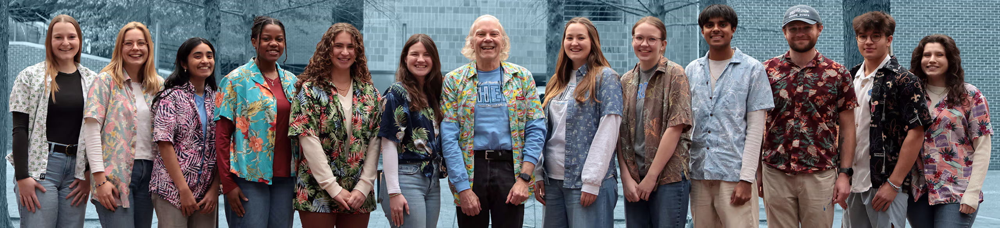

My research agenda lies on how understanding the activity of proteins within the nervous system may increase accessibility to treatment. Previous research suggests a linkage between decreased prices of biosensor creation and cheaper treatment for consumers. With comprehension of protein interactions inducing stability, I plan to construct calcium biosensors with high stability and increased fluorescence within the neural environment. Such inexpensive biosensors may be used to detect, respond, and treat neurodegenerative diseases at a price less than that of current procedures, improving the accessibility of care.
Through my work in the Pielak Lab, I utilize Nuclear Magnetic Resonance (NMR) to discover the effects of increased protein concentration on physiological protein stability. By comprehending the effects of interactions between macromolecules, I’ve developed the skills required to apply protein’s stabilizing qualities to constructing biosensors.